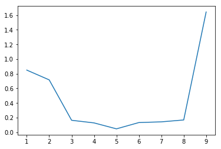

1. Introduction
After two introductory post-series (linear and logistic regression), we dive into a crucial topic that every machine-learning practitioner should be at least aware of: model selection.
Basically, we do not want our models to learn our data by heart and then to struggle to handle new unseen data samples. We want them to be great at generalizing.
We have introduced the bias and variance concepts in Part1 and the bias-variance dilemma, the model capacity, the training/testing split practice and learning curves analysis in Part2.
We now go through the hyperparameter optimization for model selection, via cross-validation, and the regularization technique. The former topic is more recently referred to as meta-learning.
2. Hyperparameter optimization for model selection
We define two levels of parameters of a class of models:
- hyperparameter: high-level parameters that define specific properties of the main model type and of the learning algorithm.
- parameters: low-level parameters that describe the actual model itself for a given model type.
For instance, if we build a logistic regression model, we may want to define the odds ratio as a polynomial function of degree $N$, the learning rate of the gradient descent algorithm, the lambda factor that controls the model regulation (see later [section] for further details). They all are hyperparameters, where the first one is at the model level while the remainders are at the learning-algorithm one. Instead, the coefficients of the polynomial function of the inputs, which are learned via gradient descent algorithm, are the low-level parameters.
We introduce one promising method to choose/tune the model hyperparameters: random search with cross-validation. We apply this powerful technique to select the optimal degree of the polynomial function used to describe the generated dataset.
Here follows the procedure to implement:
- Set up a grid of hyperparameters to evaluate. In our case, it could be the integer list ranging from 1 to the maximum admissible degree.
- Randomly sample a combination of hyperparameters. We can start with degree equal to 3.
- Train the model with that specific setting.
- Assess the model with the K-fold cross-validation method.
- Select the best hyperparameters.
Cross-validation entails to split the whole training dataset into multiple permutations of training and validation sets.
It is referred to as k-fold validation, since the whole dataset is split into k subsets and the validation step is repeated k times.
Each time, one of the k subsets is selected as validation set while the remaining k-1 subsets are combined into the new training set.
The overall model error will be the average error on each of the k iterations of the cross-validation.
It is often summarized that model parameters are learned on the training set, the hyperparameters are optimized on the validation set and the overall effective model performance is assessed on the test set.
We start generating a dataset and splitting it into the training and test sets, with 80-20% ratio, respectively. Since we generate 500 points, training set contains 400 points, while test set the remaining 100.

Npnts = 500
xData, yData = genData(Npnts)
idxSplit = int(.8*Npnts)
xTrain, xTest = xData[:idxSplit], xData[idxSplit:]
yTrain, yTest = yData[:idxSplit], yData[idxSplit:]
print('Training set size: {}'.format(xTrain.shape[0]))
print('Test set size: {}'.format(xTest.shape[0]))
Training set size: 400
Test set size: 100
We train and assess the model on training set only. The error is 3.99. We need to evaluate it on the test to determine its capability of generalizing. The test error is greater than the training error by 86.5%.
PF = PolynomialFeatures(1)
lr = LinearRegression()
lr.fit(PF.fit_transform(xTrain), yTrain)
errTrain = np.mean((lr.predict(PF.fit_transform(xTrain))-yTrain)**2)
print('Training error: {}'.format(errTrain))
Training error: 3.9894085224268645
errTest = np.mean((lr.predict(PF.fit_transform(xTest))-yTest)**2)
print('Testing error: {}'.format(errTest))
print('Increment: {}'.format((errTest-errTrain)/errTrain*100))
Testing error: 7.44277706585903
Increment: 86.5634222220839
The next step is to use the k-fold cross-validation method to choose the best polynomial degree and then assess the final model on the test set one more time.
If we use k=8 subsets, each will be 50-samples big.
Within a for-loop ranging from 1 to k=8, the k-th slice of 50 training samples from the training set is selected as current validation set, while everything else is transferred to the current training set.
We use the Numpy delete function to pop the validation set from the training set to obtain the current set.
The validation error is saved for each iteration and the mean is returned as the actual score of that specific setting, which is the first-degree polynomial model. We need to repeat these steps for each hyperparameter setting to investigate.
def crossValidation(kFold=8, degree=1):
valSetSize = int(idxSplit/kFold)
errVals = []
for kk in range(kFold):
xVal = xTrain[kk*valSetSize:(kk+1)*valSetSize, :]
yVal = yTrain[kk*valSetSize:(kk+1)*valSetSize]
xTrain0 = np.delete(xTrain, range(kk*valSetSize,(kk+1)*valSetSize), axis=0)
yTrain0 = np.delete(yTrain, range(kk*valSetSize,(kk+1)*valSetSize))
PF = PolynomialFeatures(degree)
lr = LinearRegression()
lr.fit(PF.fit_transform(xTrain0), yTrain0)
errVal = np.mean((lr.predict(PF.fit_transform(xVal))-yVal)**2)
errVals.append(errVal)
return np.mean(np.array(errVals))
errVal = crossValidation(8, 1)
print('Average model performance on the k-fold validation set: {:.4f}'.format(errVal))
Average model performance on the k-fold validation set: 7.0730
degrees = list(range(1, 10))
errVals = []
for degree in degrees:
errVals.append(crossValidation(8, degree=degree))
optDegree = degrees[np.argmin(errVals)]
print('The optimal degree value by applying the k-fold cross-validation is {}'.format(str(optDegree)))
The optimal degree value by applying the k-fold cross-validation is 5
The figure shows the error trend wrt the model degree.
plt.figure()
plt.plot(degrees, np.log10(errVals))
[<matplotlib.lines.Line2D at 0x1c41cd8a400>]

Here we calculate the test error of the best model selected with cross-validation.
Recall to feed the test set inputs to the polynomial transformation function defined by the optimal degree optDegree, otherwise the predict() method would throw an error.
PF = PolynomialFeatures(optDegree)
lr = LinearRegression()
lr.fit(PF.fit_transform(xTrain), yTrain)
errTest = np.mean((lr.predict(PF.fit_transform(xTest))-yTest)**2)
print('Testing error: {}'.format(errTest))
Testing error: 5.733407165800337
3. Regularization
We have seen that model selection is a key practice to avoid either high bias or high variance and at least get a trade-off of the two terms.
If we take the polynomial function as an example, we can set its degree with an hyperparameter or force the learning algorithm to set to 0 some parameters corresponding to the high-degree terms of a given polynomial.
How can we force the learning system to drop some parameters, by setting their values to 0, to achieve best overall trade-off?
3.1 Ridge
We can introduce an additional term to the loss function, which is going to penalize very high values of the model parameters. Instead of forcing the coefficients to be exactly 0, we can discount for values way too far from 0. In that way, the penalty is continuous in the parameter domain. An important conclusion is that this approach will not cancel irrelevant features out of the model but rather will minimize their impact on the trained model. This penalty is related to the magnitude of each parameter of the model inputs, so the penalty is not affected by the bias. The penalty definition is then as follows:
$$ P(\theta) = \frac{1}{2\cdot m}\sum_{k=1}^{N} \theta_k^2 $$
which is continuous and differentiable. The learning process would not be stable if the penalty definition were as:
$$ P(\theta) =
\begin{cases}
10,& \text{if any } \theta_k\neq 0\\
0, & \text{otherwise}
\end{cases} $$
because the gradient would be 0 everywhere and take huge values at 0.
This model is called Ridge regression and the overall loss function is:
$$ J = \frac{1}{2\cdot m}\big(\underbrace{\sum_{j=1}^{m} (y^j-\theta^T \cdot x^j)^2}_\text{OLS} + \lambda\cdot\underbrace{\sum_{k=1}^{N} \theta_k^2}_\text{Penalty}\big) $$
Please refer to this post to get the OLR (ordinary linear regression) loss definition, where ordinary implies no regularization.
The $\lambda$ parameter is a weighting factor that plays the role of balancing the importance of the two terms. The higher its value, the higher the regularization impact, the simpler the model. At limit, $\lambda = 0$ gives us the OLR.
We need to calculate the gradient of the loss function to apply the gradient descent algorithm to the regularized linear regression problem. We split the gradient calculus into two steps, one for the OLS term, the other for the penalty term. The gradient of the first term for the $\theta_k$ parameter is as follows (Eq. 1):
$$\frac{\partial J_{OLS}}{\partial \theta_k} = \frac{1}{m}\sum_{j=1}^{m} (y^j-\theta^T \cdot x^j)\cdot x_k^j $$
Please have a look at this post for further details about the gradient calculation.
The gradient of the penalty term is:
$$ \frac{\partial P(\theta)}{\partial \theta_k} = \frac{\partial}{\partial \theta_k}\big(\frac{1}{2\cdot m}\sum_{j=1}^{N} \theta_j^2 \big) = \frac{1}{m} \theta_k $$
Keep in mind that the input feature associated to the first parameter $\theta_0$, which is the intercept, is always 1, and that the penalty loss gradient is 0 for $\theta_0$ since we are summing from $j=1$ to $N$.
3.2 Lasso
The second approach, referred to as Least Absolute Shrinkage and Selection Operator (Lasso), defines the penalty as the mean of the absolute value of the model parameters:
$$ P(\theta) = \frac{1}{2\cdot m}\sum_{k=1}^{N} |\theta_k| $$
This minor change has a huge impact on the model trade-off since the Lasso method pushes the model parameters to be exactly 0 if they are not beneficial for significant model performance improvements. The final model could have fewer features since the effect of some has been cancelled out by 0 parameters. Fewer features could mean that the overall degree of the function is reduced, which has a similar effect to reducing the model degree (hyperparameter), or at least that the final model is less sensitive to the noise of any of the inputs.
3.3 Comparing Ridge and Lasso
Ridge and Lasso regressions are both forms of regularized linear regressions. The regularization can also be interpreted as prior in a maximum a posteriori estimation method. Under this interpretation, the ridge and the lasso make different assumptions on the class of linear transformation they infer to relate input and output data. In the ridge, the coefficients of the linear transformation are normal distributed and in the lasso, they are Laplace distributed. In the lasso, this makes it easier for the coefficients to be zero and therefore easier to eliminate some of your input variables as not contributing to the output.
Lasso tends to do well if there are a small number of significant parameters and the others are close to zero Ridge works well if there are many large parameters of about the same value.
In practice, just run cross-validation to select the more suited model for a specific case. See this answer on StackExchange for further details.